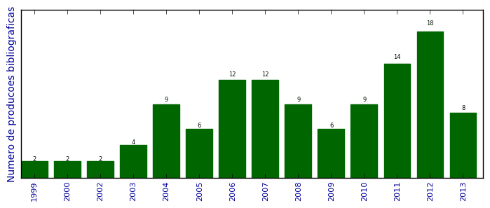

UFSM - Análise do Lattes
Total de produção bibliográfica

Número total de itens: 113
2013
| 1. | CASSALES, G. W. ; HOFFMANN, G. F. ; VIEIRA, J. C. ; CHARAO, A. S.. Paralelização híbrida de cálculo de probabilidades utilizando redes bayesianas. Em: XII Simpósio de Informática da Unifra (SIRC 2013), p. 26-31, 2013. [ citações Google Scholar | citações Microsoft Acadêmico | busca Google ] Qualis: Não identificado (XII Simpósio de Informática da Unifra (SIRC 2013)) |
| 2. | Gomes, V. C. F. ; Campos Velho, H. F. ; Campos Velho, H. F. ; CHARAO, A. S.. A fast Poisson solver for hybrid reconfigurable system. Lecture Notes in Computer Science. v. 7806, p. 46-58, 2013. [ citações Google Scholar | citações Microsoft Acadêmico | busca Google ] Qualis: C |
| 3. | GOMES, V. C. F. ; VELHO, H. F. C. ; CHARAO, A. S.. A Fast Poisson Solver for Hybrid Reconfigurable System. Em: 9th International Symposium on Applied Reconfigurable Computing, p. 47-58, 2013. [ citações Google Scholar | citações Microsoft Acadêmico | busca Google ] Qualis: B3 (International Workshop on Applied Reconfigurable Computing) |
| 4. | MOURA, J. L. ; LUNARDI, G. M. ; CHARAO, A. S. ; BARCELOS, P. P. A. ; STEIN, B. O.. Gestão de Processos de Negócio em Curso de Sistemas de Informação: Relato de Experiência Utilizando Software Livre. Em: IX Simpósio Brasileiro de Sistemas de Informação (SBSI), p. 206-217, 2013. [ citações Google Scholar | citações Microsoft Acadêmico | busca Google ] Qualis: B4 (Simpósio Brasileiro de Sistemas de Informação) |
| 5. | RUIZ, R. S. R. ; VELHO, H. F. C. ; LESSA, L. S. ; CHARAO, A. S.. Turbulent Parameterization for CCATT-BRAMS by GPU. Ciência e Natura. v. 35, p. 196-198, 2013. [ citações Google Scholar | citações Microsoft Acadêmico | busca Google ] Qualis: C (Ciência e Cultura) |
| 6. | STEFFENEL, LUIZ ANGELO ; FLAUZAC, OLIVIER ; CHARAO, ANDREA SCHWERTNER ; BARCELOS, PATRICIA PITTHAN ; STEIN, BENHUR ; NESMACHNOW, SERGIO ; PINHEIRO, MANUELE KIRSCH ; DIAZ, DANIEL. PER-MARE: Adaptive Deployment of MapReduce over Pervasive Grids. Em: 2013 Eighth International Conference on P2P, p. 17, 2013.  [ citações Google Scholar | citações Microsoft Acadêmico | busca Google ] Qualis: Não identificado (2013 Eighth International Conference on P2P) |
| 7. | STRECK, N. ; SILVA, M. R. ; ROSA, H. T. ; WALTER, L. C. ; BENEDETTI, R. P. ; CARLI, C. ; CHARAO, A. S. ; MARCOLIN, E. ; FERRAZ, S. ; MARCHESAN, E.. Acompanhamento da Safra 2012/2013 de Arroz Irrigado no RIo Grande do Sul por Modelagem Numérica. Ciência e Natura. v. 35, p. 368-372, 2013. [ citações Google Scholar | citações Microsoft Acadêmico | busca Google ] Qualis: C (Ciência e Cultura) |
| 8. | VIEIRA, J. C. ; CASSALES, G. W. ; FAE, F. ; CHARAO, A. S.. Paralelização de Ray Tracing utilizando Intel Cilk Plus. Em: XII Simpósio de Informática da Unifra (SIRC 2013), p. 14-19, 2013. [ citações Google Scholar | citações Microsoft Acadêmico | busca Google ] Qualis: Não identificado (XII Simpósio de Informática da Unifra (SIRC 2013)) |
2012
| 1. | ALBIERO, F. W. ; STEIN, B. O. ; CHARAO, A. S.. Panorama sobre Técnicas de Escalonamento da Voltagem e da Frequência do Processador em Clusters e Grades. Em: ERAD 2012 - Fórum de Pós-Graduação, 2012, Erechim, RS. Anais ERAD 2012, 2012. [ citações Google Scholar | citações Microsoft Acadêmico | busca Google ] Qualis: Não identificado (ERAD 2012 - Fórum de Pós-Graduação, 2012, Erechim, RS. Anais ERAD 2012) |
| 2. | BARBOSA, F. P. ; CHARAO, A. S.. Impact of pay-as-you-go Cloud Platforms on Software Pricing and Development: A Review and Case Study. Em: ICCSA 2012 - 12th International Conference on Computational Science and Its Applications, v. 7336, p. 404-417, 2012. [ citações Google Scholar | citações Microsoft Acadêmico | busca Google ] Qualis: B1 (International Conference on Computational Science and its Applications) |
| 3. | BERNARDI, C. A. C. ; MADALOSSO, O. M. ; CHARAO, A. S.. Utilizando OpenCL para Acelerar um Modelo de Simulação Atmosférica. Em: 27ª Jornada Acadêmica Integrada, 2012, Santa Maria, RS. Anais 27ª Jornada Acadêmica Integrada, 2012. [ citações Google Scholar | citações Microsoft Acadêmico | busca Google ] Qualis: Não identificado (27ª Jornada Acadêmica Integrada, 2012, Santa Maria, RS. Anais 27ª Jornada Acadêmica Integrada) |
| 4. | BERNARDI, C. A. C. ; MADALOSSO, O. M. ; CHARAO, A. S. ; WINCK, A. T. ; MACHADO, K.. Análise de Profilers para Programas em Java: Estudo de Caso Aplicado ao Algoritmo M5P do Software Weka. Em: WSCAD-WIC 2012 / Simpósio em Sistemas Computacionais / Workshop de IC, 2012, Petrópolis, RJ. Anais WSCAD-WIC 2012, 2012. [ citações Google Scholar | citações Microsoft Acadêmico | busca Google ] Qualis: B4 (Simpósio em Sistemas Computacionais) |
| 5. | BORGES, D. P. ; SULZBACH, M. ; CHARAO, A. S. ; STEIN, B. O. ; MEDINA, R. D.. Ambiente de acesso seguro a nuvem privada: uma proposta voltada à rede da UNIPAMPA. Em: ERRC 2012 - Escola Regional de Redes de Computadores / Pós-Graduação, 2012, Pelotas, RS. Anais ERRC 2012, 2012. [ citações Google Scholar | citações Microsoft Acadêmico | busca Google ] Qualis: Não identificado (ERRC 2012 - Escola Regional de Redes de Computadores / Pós-Graduação, 2012, Pelotas, RS. Anais ERRC 2012) |
| 6. | CASSALES, G. W. ; CARDOZO, G. R. ; CHARAO, A. S.. Protótipo de Aplicativo Móvel em Plataforma Android para Controle de Frequência em Sala de Aula. Em: 27ª Jornada Acadêmica Integrada, 2012, Santa Maria, RS. Anais 27ª Jornada Acadêmica Integrada, 2012. [ citações Google Scholar | citações Microsoft Acadêmico | busca Google ] Qualis: Não identificado (27ª Jornada Acadêmica Integrada, 2012, Santa Maria, RS. Anais 27ª Jornada Acadêmica Integrada) |
| 7. | CHARAO, A. S.. Refatoração de software: ferramenta de apoio à paralelização de programas com OpenMP. 2012. Apresentação de Trabalho/Conferência ou palestra |
| 8. | GONDIM, E. M. ; BARCELOS, P. P. A. ; CHARAO, A. S.. Experiência de Injeção de Falhas no DataNode do Apache Hadoop. Em: ERAD 2012 - Sessão de Iniciação Científica, 2012, Erechim, RS. Anais ERAD 2012, 2012. [ citações Google Scholar | citações Microsoft Acadêmico | busca Google ] Qualis: Não identificado (ERAD 2012 - Sessão de Iniciação Científica, 2012, Erechim, RS. Anais ERAD 2012) |
| 9. | GONDIM, E. M. ; BARCELOS, P. P. A. ; CHARAO, A. S.. Explorando o Framework de Injeção de Falhas do Apache Hadoop. Em: WSCAD-WIC 2012 / Simpósio em Sistemas Computacionais / Workshop de IC, 2012, Petrópolis, RJ. Anais WSCAD-WIC 2012, 2012. [ citações Google Scholar | citações Microsoft Acadêmico | busca Google ] Qualis: B4 (Simpósio em Sistemas Computacionais) |
| 10. | LUNARDI, G. M. ; MOURA, J. L. ; CHARAO, A. S. ; CASSAL, M. L.. Desenvolvimento de Sistema para controle de ACG dos cursos de Sistemas de Informação e Ciência da Computação da UFSM: Integração à base de dados LDAP. Em: 27ª Jornada Acadêmica Integrada, 2012, Santa Maria, RS. Anais 27ª Jornada Acadêmica Integrada, 2012. [ citações Google Scholar | citações Microsoft Acadêmico | busca Google ] Qualis: Não identificado (27ª Jornada Acadêmica Integrada, 2012, Santa Maria, RS. Anais 27ª Jornada Acadêmica Integrada) |
| 11. | MOURA, J. L. ; LUNARDI, G. M. ; CHARAO, A. S. ; STEIN, B. O. ; BARCELOS, P. P. A.. Eliminando Papel no Registro de ACGs: uma Aplicação de Gerenciamento de Processos de Negócio nos Cursos de Ciência da Computação e Sistemas de Informação da UFSM. Em: 27ª Jornada Acadêmica Integrada, 2012, Santa Maria, RS. Anais 27ª Jornada Acadêmica Integrada, 2012. [ citações Google Scholar | citações Microsoft Acadêmico | busca Google ] Qualis: Não identificado (27ª Jornada Acadêmica Integrada, 2012, Santa Maria, RS. Anais 27ª Jornada Acadêmica Integrada) |
| 12. | NASCIMENTO FILHO, R. L. ; ALBIERO, F. W. ; CHARAO, A. S. ; STEIN, B. O.. Um Estudo sobre Configurações de Economia de Energia no Gerenciador de Recursos OAR. Em: ERAD 2012 - Sessão de Iniciação Científica, 2012, Erechim, RS. Anais ERAD 2012, 2012. [ citações Google Scholar | citações Microsoft Acadêmico | busca Google ] Qualis: Não identificado (ERAD 2012 - Sessão de Iniciação Científica, 2012, Erechim, RS. Anais ERAD 2012) |
| 13. | NASCIMENTO FILHO, R. L. ; CHARAO, A. S.. Adicionando Variáveis a um Tipo Derivado: Refatoração no Photran. Em: ERAD 2012 - Sessão de Iniciação Científica, 2012, Erechim, RS. Anais ERAD 2012, 2012. [ citações Google Scholar | citações Microsoft Acadêmico | busca Google ] Qualis: Não identificado (ERAD 2012 - Sessão de Iniciação Científica, 2012, Erechim, RS. Anais ERAD 2012) |
| 14. | RISSETTI, G. ; CHARAO, A. S. ; PIVETA, E. K.. Catálogo de Refatorações para a Evolução de Programas em Linguagem Fortran. Em: ERAD 2012 - Fórum de Pós-Graduação, 2012, Erechim, RS. Anais ERAD 2012, 2012. [ citações Google Scholar | citações Microsoft Acadêmico | busca Google ] Qualis: Não identificado (ERAD 2012 - Fórum de Pós-Graduação, 2012, Erechim, RS. Anais ERAD 2012) |
| 15. | SCHEID, E. J. ; CHARAO, A. S. ; STEIN, B. O.. Explorando a Google Provisioning API para gerenciamento automático de grupos de discussão na rede da Informática/UFSM. Em: 27ª Jornada Acadêmica Integrada, 2012, Santa Maria, RS. Anais 27ª Jornada Acadêmica Integrada, 2012. [ citações Google Scholar | citações Microsoft Acadêmico | busca Google ] Qualis: Não identificado (27ª Jornada Acadêmica Integrada, 2012, Santa Maria, RS. Anais 27ª Jornada Acadêmica Integrada) |
| 16. | SCHEID, E. J. ; MINATO, L. H. ; STEIN, B. O. ; CHARAO, A. S.. Computação em Nuvem com Google Apps for Education: o Caso do Núcleo de Ciência da Computação da Universidade Federal de Santa Maria. Em: ERRC 2012 - Escola Regional de Redes de Computadores / Iniciação Científica, 2012, Pelotas, RS. Anais ERRC 2012, 2012. [ citações Google Scholar | citações Microsoft Acadêmico | busca Google ] Qualis: Não identificado (ERRC 2012 - Escola Regional de Redes de Computadores / Iniciação Científica, 2012, Pelotas, RS. Anais ERRC 2012) |
| 17. | TIETZMANN, D. K. ; CHARAO, A. S.. Análise automática de acessos concorrentes a dados para refatoração de código sequencial em código paralelo OpenMP. Em: ERAD 2012 - Fórum de Pós-Graduação, 2012, Erechim, RS. Anais ERAD 2012, 2012. [ citações Google Scholar | citações Microsoft Acadêmico | busca Google ] Qualis: Não identificado (ERAD 2012 - Fórum de Pós-Graduação, 2012, Erechim, RS. Anais ERAD 2012) |
| 18. | TIETZMANN, D. K. ; CHARAO, A. S. ; BEAL JUNIOR, J. C.. Uma extensão do Eclipse para auxiliar na refatoração de código sequencial em código paralelo com OpenMP. Em: Workshop de Software Livre, 2012. [ citações Google Scholar | citações Microsoft Acadêmico | busca Google ] Qualis: Não identificado (Workshop de Software Livre) |
2011
| 1. | BARBOSA, F. P. ; CHARAO, A. S.. Uma análise do impacto das plataformas pay-as-you-go de computação em nuvem na construção e precificação de software. Em: CLEI 2011 - Conferencia Latinoamericana de Informática, 2011. [ citações Google Scholar | citações Microsoft Acadêmico | busca Google ] Qualis: B4 (Conferencia Latinoamericana de Informática) |
| 2. | BONIATI, B. B. ; CHARAO, A. S. ; STEIN, B. O. ; RISSETTI, G. ; PIVETA, E. K.. Automated Refactorings for High Performance Fortran Programmes. International Journal of High Performance Systems Architecture (Print). v. 3, p. 98-109, 2011. [ citações Google Scholar | citações Microsoft Acadêmico | busca Google ] Qualis: B2 |
| 3. | CONTI, F. ; CHARAO, A. S.. Análise de Prazos de Entrega de Atividades no Moodle: um Estudo de Caso Utilizando Mineração de Dados. RENOTE. Revista Novas Tecnologias na Educação. v. 9, p. 1-10, 2011. [ citações Google Scholar | citações Microsoft Acadêmico | busca Google ] Qualis: B5 |
| 4. | GONDIM, E. M. ; BARCELOS, P. P. A. ; PRATES, B. P. ; CHARAO, A. S.. Análise dos Mecanismos de Tolerância a Falhas do Framework Apache Hadoop para Computação Distribuída. Em: 26a Jornada Acadêmica Integrada (JAI), 2011, Santa Maria, RS. Anais da 26a Jornada Acadêmica Integrada (JAI). Santa Maria, RS: Universidade Federal de Santa Maria, 2011. [ citações Google Scholar | citações Microsoft Acadêmico | busca Google ] Qualis: Não identificado (26a Jornada Acadêmica Integrada (JAI), 2011, Santa Maria, RS. Anais da 26a Jornada Acadêmica Integrada (JAI). Santa Maria, RS: Universidade Federal de Santa Maria) |
| 5. | GONDIM, E. M. ; PRATES, B. P. ; BARCELOS, P. P. A. ; CHARAO, A. S.. Análise de Alternativas para Injeção de Falhas no Apache Hadoop. Em: WSCAD-WIC 2011 - Workshop de Iniciação Científica do XII Simpósio em Sistemas Computacionais de Alto Desempenho, 2011, Vitória, ES. Anais do WSCAD-SSC 2011 - XII Simpósio em Sistemas Computacionais de Alto Desempenho, 2011. [ citações Google Scholar | citações Microsoft Acadêmico | busca Google ] Qualis: B4 (Simpósio em Sistemas Computacionais) |
| 6. | LUNARDI, G. M. ; BARCELOS, P. P. A. ; CHARAO, A. S.. Avaliação do Desempenho de um Algoritmo de Mineração de Dados do Pacote Estatístico R. Em: XI Escola Regional de Alto Desempenho (ERAD 2011), 2011, Porto Alegre, RS. Anais da XI Escola Regional de Alto Desempenho (ERAD 2011). Porto Alegre, RS, 2011. [ citações Google Scholar | citações Microsoft Acadêmico | busca Google ] Qualis: B5 (Escola Regional de Alto Desempenho) |
| 7. | NASCIMENTO FILHO, R. L. ; CHARAO, A. S.. Economia de Energia no Gerenciamento de Recursos Computacionais: um Estudo de Caso com Green OAR. Em: 26a Jornada Acadêmica Integrada (JAI), 2011, Santa Maria, RS. Anais da 26a Jornada Acadêmica Integrada (JAI). Santa Maria, RS: Universidade Federal de Santa Maria, 2011. [ citações Google Scholar | citações Microsoft Acadêmico | busca Google ] Qualis: Não identificado (26a Jornada Acadêmica Integrada (JAI), 2011, Santa Maria, RS. Anais da 26a Jornada Acadêmica Integrada (JAI). Santa Maria, RS: Universidade Federal de Santa Maria) |
| 8. | PEREIRA, A. ; CHARAO, A. S. ; ROSE, C. A. F.. Análise de Desempenho da Ferramenta Apache Mahout para Mineração de Dados Distribuída. Em: XI Escola Regional de Alto Desempenho (ERAD 2011), 2011, Porto Alegre, RS. Anais da XI Escola Regional de Alto Desempenho (ERAD 2011). Porto Alegre, RS, 2011. [ citações Google Scholar | citações Microsoft Acadêmico | busca Google ] Qualis: B5 (Escola Regional de Alto Desempenho) |
| 9. | PINTO, V. G. ; CHARAO, A. S. ; ROSE, C. A.. Experimentos de Mineração de Dados Paralela e Distribuída com Grid Weka. Em: XI Escola Regional de Alto Desempenho (ERAD 2011), 2011, Porto Alegre, RS. Anais da XI Escola Regional de Alto Desempenho (ERAD 2011). Porto Alegre, RS, 2011. [ citações Google Scholar | citações Microsoft Acadêmico | busca Google ] Qualis: B5 (Escola Regional de Alto Desempenho) |
| 10. | RUIZ, R. S. R. ; VELHO, H. F. C. ; CARETTA, C. A. ; SOUTO, R. P. ; CHARAO, A. S.. Grid environment for turbulent dynamics in cosmology. Journal of Computational Interdisciplinary Sciences. v. 2, p. 1-6, 2011. [ citações Google Scholar | citações Microsoft Acadêmico | busca Google ] Qualis: B5 |
| 11. | RUSSI, D. F. ; CHARAO, A. S.. Ambientes de Desenvolvimento Integrado no Apoio ao Ensino da Linguagem de Programação Haskell. RENOTE. Revista Novas Tecnologias na Educação. v. 9, p. 1-10, 2011. [ citações Google Scholar | citações Microsoft Acadêmico | busca Google ] Qualis: B5 |
| 12. | RUSSI, D. F. ; CHARAO, A. S.. Análise Comparativa de Ambientes Integrados de Desenvolvimento para a Linguagem Haskell. Em: 26a Jornada Acadêmica Integrada (JAI), 2011, Santa Maria, RS. Anais da 26a Jornada Acadêmica Integrada (JAI). Santa Maria, RS: Universidade Federal de Santa Maria, 2011. [ citações Google Scholar | citações Microsoft Acadêmico | busca Google ] Qualis: Não identificado (26a Jornada Acadêmica Integrada (JAI), 2011, Santa Maria, RS. Anais da 26a Jornada Acadêmica Integrada (JAI). Santa Maria, RS: Universidade Federal de Santa Maria) |
| 13. | TIETZMANN, D. K. ; CHARAO, A. S.. Refatorando laços de repetição em programas Fortran de alto desempenho. Em: XI Escola Regional de Alto Desempenho (ERAD 2011), 2011, Porto Alegre, RS. Anais da XI Escola Regional de Alto Desempenho (ERAD 2011). Porto Alegre, RS, 2011. [ citações Google Scholar | citações Microsoft Acadêmico | busca Google ] Qualis: B5 (Escola Regional de Alto Desempenho) |
| 14. | TIETZMANN, D. K. ; RISSETTI, G. ; CHARAO, A. S. ; PIVETA, E. K. ; PETRY, A. ; SOUZA, J. R.. Refatorações para Melhoria da Legibilidade de Código Fortran. Em: WSL'11 - Workshop de Software Livre, 2011. [ citações Google Scholar | citações Microsoft Acadêmico | busca Google ] Qualis: Não identificado (WSL'11 - Workshop de Software Livre) |
2010
| 1. | BARBOSA, F. P. ; CHARAO, A. S.. Uma Comparação entre os Principais Frameworks de Plataformas como Serviço em Cloud Computing. Em: X Escola Regional de Alto Desempenho (ERAD 2010), 2010, Passo Fundo, RS. Anais da X Escola Regional de Alto Desempenho (ERAD 2010). Passo Fundo, RS, 2010. [ citações Google Scholar | citações Microsoft Acadêmico | busca Google ] Qualis: B5 (Escola Regional de Alto Desempenho) |
| 2. | BONIATI, B. B. ; RISSETTI, G. ; CHARAO, A. S. ; PIVETA, E. K.. Extensões para Refatoração de Código Fortran no Eclipse. Em: Workshop de Software Livre, p. 74-79, 2010. [ citações Google Scholar | citações Microsoft Acadêmico | busca Google ] Qualis: Não identificado (Workshop de Software Livre) |
| 3. | CARISSIMI, A. S. ; GEYER, C. F. R. ; MAILLARD, N. B. ; NAVAUX, P. O. A. ; CAVALHEIRO, G. G. H. ; PILLA, M. L. ; YAMIN, A. ; CHARAO, A. S. ; STEIN, B. O. ; ROSE, C. A. ; FERNANDES, G. ; FERRETO, T. ; ZORZO, A.. Energy-Aware Scheduling of Parallel Programs. Em: Conferencia Latino Americana de Computación de Alto Rendimiento, p. 95-108, 2010. [ citações Google Scholar | citações Microsoft Acadêmico | busca Google ] Qualis: Não identificado (Conferencia Latino Americana de Computación de Alto Rendimiento) |
| 4. | FRUH, L. G. ; CHARAO, A. S.. Geração Automatizada de Portais Web para Grades Computacionais. Em: X Escola Regional de Alto Desempenho (ERAD 2010), 2010, Passo Fundo, RS. Anais da X Escola Regional de Alto Desempenho (ERAD 2010). Passo Fundo, RS, 2010. [ citações Google Scholar | citações Microsoft Acadêmico | busca Google ] Qualis: B5 (Escola Regional de Alto Desempenho) |
| 5. | GOMES, V. C. F. ; CHARAO, A. S. ; VELHO, H. F. C. ; CALEGARO, B. C.. Uma arquitetura de Hashing SHA-2 com alto throughput para sistema híbrido reconfigurável. Em: X Escola Regional de Alto Desempenho (ERAD 2010), 2010, Passo Fundo, RS. Anais da X Escola Regional de Alto Desempenho (ERAD 2010). Passo Fundo, RS, 2010. [ citações Google Scholar | citações Microsoft Acadêmico | busca Google ] Qualis: B5 (Escola Regional de Alto Desempenho) |
| 6. | PEREIRA, A. ; PINTO, V. G. ; CHARAO, A. S.. CertificaPET: Sistema Gerenciador de Certificados de Eventos em Formato Digital. Em: Workshop de Software Livre, p. 94-99, 2010. [ citações Google Scholar | citações Microsoft Acadêmico | busca Google ] Qualis: Não identificado (Workshop de Software Livre) |
| 7. | RISSETTI, G. ; CHARAO, A. S. ; BONIATI, B. B.. Incorporação de novas refatorações para linguagem Fortran no IDE Eclipse. Em: X Escola Regional de Alto Desempenho (ERAD 2010), 2010, Passo Fundo, RS. Anais da X Escola Regional de Alto Desempenho (ERAD 2010). Passo Fundo, RS, 2010. [ citações Google Scholar | citações Microsoft Acadêmico | busca Google ] Qualis: B5 (Escola Regional de Alto Desempenho) |
| 8. | SOUTO, R. P. ; VELHO, H. F. C. ; PAES, F. F. ; STEPHANY, S. ; NAVAUX, P. O. A. ; CHARAO, A. S. ; VIZZOTTO, J. K.. Grid Computing for Multi-spectral Tomografic Reconstruction of Chlorophyll Concentration in Ocean Water. Em: C. Constanda; M. E. Pérez. (Org.). Integral Methods in Science and Engineering. Boston. : Birkhäuser. 2010.v. 2, p. 327-337. [ citações Google Scholar | citações Microsoft Acadêmico | busca Google ] |
| 9. | VIZZOTTO, J. K. ; CHARAO, A. S. ; SOUTO, R. P. ; VELHO, H. F. C.. Aplicações de Grades Computacionais: Estudos de Caso em Meteorologia e Hidrologia. 10. Escola Regional de Alto Desempenho. Porto Alegre. Em: . : SBC/UCPEL/UPF/UNIJUÍ. 2010.p. 51-82. [ citações Google Scholar | citações Microsoft Acadêmico | busca Google ] |
2009
| 1. | BONIATI, B. B. ; CHARAO, A. S. ; STEIN, B. O.. Automação de Refatorações para Programas Fortran de Alto Desempenho. Em: Simpósio de Sistemas Computacionais de Alto Desempenho - WSCAD-SSC, 2009. [ citações Google Scholar | citações Microsoft Acadêmico | busca Google ] Qualis: Não identificado (Simpósio de Sistemas Computacionais de Alto Desempenho - WSCAD-SSC) |
| 2. | CHARAO, A. S. (Org.) ; COSTA, C. M. (Org.) ; VIANA, F. (Org.) ; BRANCO, M. D. (Org.) ; ATZ, M. C. (Org.) ; FRITSCH, R. (Org.) ; FERREIRA, V. S. (Org.). Anais do X Workshop de Software Livre - WSL 2009 / 10o Fórum Internacional de Software Livre - FISL 2009. Porto Alegre: Sociedade Brasileira de Computação. 2009. v. 1. 172p , . [ citações Google Scholar | citações Microsoft Acadêmico | busca Google ] |
| 3. | KOSLOVSKI, G. P. ; PRIMET, P. V. ; CHARAO, A. S.. VXDL: Virtual Resources and Interconnection Networks Description Language. Em: P. V.-B. Primet,;T. Kudoh; J. Mambretti. (Org.). Networks for Grid Applications. Lecture Notes of the Institute for Computer Sciences, Social Informatics and Telecommunications Engineering. Berlin Heidelberg. : Springer. 2009.v. 2, p. 138-154. [ citações Google Scholar | citações Microsoft Acadêmico | busca Google ] |
| 4. | KREUTZ, D. L. ; CHARAO, A. S.. FlexVAPs: a system for managing virtual appliances for heterogeneous virtualized environments. Em: IEEE/IFIP 6th Latin American Network Operations and Management Symposium, p. 1-12, 2009. [ citações Google Scholar | citações Microsoft Acadêmico | busca Google ] Qualis: B4 (Latin American Network Operations and Management Symposium) |
| 5. | PEREIRA, A. ; COGO, V. V. ; CHARAO, A. S.. Frameworks para Desenvolvimento Rápido de Aplicações Web: um Estudo de Caso com CakePHP e Django. Em: Workshop de Software Livre, 2009. [ citações Google Scholar | citações Microsoft Acadêmico | busca Google ] Qualis: Não identificado (Workshop de Software Livre) |
| 6. | SOUTO, R. P. ; PAES, F. F. ; VELHO, H. F. C. ; STEPHANY, S. ; PRETO, A. J. ; CHARAO, A. S. ; VIZZOTTO, J. K. ; NAVAUX, P. O. A. ; MAILLARD, N. B.. Method for multi-spectral tomographic reconstruction of chlorophyll concentration for ocean water. Em: XIV Simpósio Brasileiro de Sensoriamento Remoto (XIV SBSR), p. 6665-6672, 2009. [ citações Google Scholar | citações Microsoft Acadêmico | busca Google ] Qualis: Não identificado (XIV Simpósio Brasileiro de Sensoriamento Remoto (XIV SBSR)) |
2008
| 1. | BONIATI, B. B. ; CHARAO, A. S.. Refatoração de Programas Fortran de Alto Desempenho. Em: Fórum de Pós-Graduação da Escola Regional de Alto Desempenho, 2008, Santa Cruz do Sul. Anais da VIII Escola Regional de Alto Desempenho (ERAD). Porto Alegre: SBC, 2008. [ citações Google Scholar | citações Microsoft Acadêmico | busca Google ] Qualis: B5 (Escola Regional de Alto Desempenho) |
| 2. | CARLI, D. M. ; MAZZANTI, E. S. ; DEWES, R. ; SANTOS, R. C. M. ; JUNIOR, V. S. ; CHARAO, A. S.. Comparação entre Abordagens de Paralelização para o Problema do Jogo da Vida. Disciplinarum Scientia. Série Ciências Exatas (Cessou em 2001. Cont. 1981-2841 Disciplinarum Scientia. Série Ciências Naturais e Tecnológicas). v. 7, p. 39-48, 2008. [ citações Google Scholar | citações Microsoft Acadêmico | busca Google ] Qualis: C (Disciplinarum Scientia. Série Ciências Naturais e Tecnológicas) |
| 3. | CHRISTO, B. C. ; CHARAO, A. S. ; ROBERTI, D. R.. Paralelização e avaliação de desempenho de um simulador de dispersão de poluentes na atmosfera. Em: Escola Regional de Alto Desempenho, 2008, Santa Cruz do Sul - RS. Anais da VIII Escola Regional de Alto Desempenho (ERAD), 2008. [ citações Google Scholar | citações Microsoft Acadêmico | busca Google ] Qualis: B5 (Escola Regional de Alto Desempenho) |
| 4. | COGO, V. V. ; VIERA, M. A. ; TESSER, R. K. ; BEVILACQUA, F. ; CHARAO, A. S.. Projeto e Implementação de um Mural Digital com Reaproveitamento de Computadores Obsoletos. Em: Workshop de Software Livre, 2008. [ citações Google Scholar | citações Microsoft Acadêmico | busca Google ] Qualis: Não identificado (Workshop de Software Livre) |
| 5. | FOGLIATTO, J. A. ; SANTOS, A. K. ; CHARAO, A. S.. Uma Metodologia para Oficinas de Inclusão Digital com Público-Alvo Heterogêneo. Em: Simpósio de Informática da Região Centro do RS (SIRC/RS), 2008. [ citações Google Scholar | citações Microsoft Acadêmico | busca Google ] Qualis: Não identificado (Simpósio de Informática da Região Centro do RS (SIRC/RS)) |
| 6. | KOSLOVSKI, G. P. ; MORA, G. F. ; CHARAO, A. S. ; STEIN, B. O.. Utilização de OpenMP na execução do aplicativo Concorde em arquiteturas com memória compartilhada. Em: Escola Regional de Alto Desempenho, 2008, Santa Cruz do Sul - RS. Anais da VIII Escola Regional de Alto Desempenho (ERAD). Porto Alegre: SBC, 2008. [ citações Google Scholar | citações Microsoft Acadêmico | busca Google ] Qualis: B5 (Escola Regional de Alto Desempenho) |
| 7. | KOSLOVSKI, G. P. ; PRIMET, P. V. ; CHARAO, A. S.. VXDL: Virtual Resources and Interconnection Networks Description Language. Em: Second International Conference on Networks for Grid Applications - GridNets 2008, 2008. [ citações Google Scholar | citações Microsoft Acadêmico | busca Google ] Qualis: Não identificado (Second International Conference on Networks for Grid Applications - GridNets 2008) |
| 8. | REIS, T. A. ; BOUFLEUR, M. P. ; VIZZOTTO, J. K. ; VELHO, H. F. C. ; CHARAO, A. S.. Automatização da Criação de Mapas com o Google Maps. Disciplinarum Scientia. Série Ciências Exatas (Cessou em 2001. Cont. 1981-2841 Disciplinarum Scientia. Série Ciências Naturais e Tecnológicas). v. 7, p. 129-136, 2008. [ citações Google Scholar | citações Microsoft Acadêmico | busca Google ] Qualis: C (Disciplinarum Scientia. Série Ciências Naturais e Tecnológicas) |
| 9. | SANTOS, R. C. M. ; CHARAO, A. S.. Análise Comparativa de Desempenho do Hipervisor Xen: Paravirtualização versus Virtualização Total. Em: Simpósio de Sistemas Computacionais de Alto Desempenho - WSCAD-SSC, 2008. [ citações Google Scholar | citações Microsoft Acadêmico | busca Google ] Qualis: Não identificado (Simpósio de Sistemas Computacionais de Alto Desempenho - WSCAD-SSC) |
2007
| 1. | BEVILACQUA, F. ; POZZER, C. T. ; CHARAO, A. S.. Análise da Plataforma J2ME através de um estudo de caso na área de jogos multiplayer. Em: VI Simpósio Brasileiro de Jogos para Computador e Entretenimento Digital, 2007. [ citações Google Scholar | citações Microsoft Acadêmico | busca Google ] Qualis: B4 (Simpósio Brasileiro de Jogos e Entretenimento Digital) |
| 2. | BOUFLEUR, M. P. ; KOSLOVSKI, G. P. ; CHARAO, A. S.. Comparação de Gerenciadores de Virtualização Baseados em Xen. Em: VII ERAD - Escola Regional de Alto Desempenho, 2007, Porto Alegre - RS. Anais da VII ERAD - Escola Regional de Alto Desempenho, 2007. [ citações Google Scholar | citações Microsoft Acadêmico | busca Google ] Qualis: B5 (Escola Regional de Alto Desempenho) |
| 3. | BOUFLEUR, M. P. ; VIERA, M. A. ; OLIVEIRA, R. L. ; REIS, T. A. ; CHARAO, A. S. ; STEIN, B. O.. Avaliação do Sistema de Arquivos Distribuído GlusterFS. Em: oncurso de Trabalhos de Iniciação Científica em Arquitetura de Computadores e Computação de Alto Desempenho (WSCAD-CTIC 2007), 2007, Gramado - RS. Anais do VIII Workshop em Sistemas Computacionais de Alto Desempenho, 2007. [ citações Google Scholar | citações Microsoft Acadêmico | busca Google ] Qualis: Não identificado (oncurso de Trabalhos de Iniciação Científica em Arquitetura de Computadores e Computação de Alto Desempenho (WSCAD-CTIC 2007), 2007, Gramado - RS. Anais do VIII Workshop em Sistemas Computacionais de Alto Desempenho) |
| 4. | KOSLOVSKI, G. P. ; BOUFLEUR, M. P. ; CHARAO, A. S.. Módulo de Descoberta Automática de Monitores de Máquinas Virtuais Xen. Em: VIII Workshop de Software Livre, 2007. [ citações Google Scholar | citações Microsoft Acadêmico | busca Google ] Qualis: Não identificado (VIII Workshop de Software Livre) |
| 5. | KOSLOVSKI, G. P. ; BOUFLEUR, M. P. ; CHARAO, A. S.. AdXen: Uma Ferramenta para Administração de Arquiteturas Virtualizadas Distribuídas Baseadas em Xen. Em: VIII Workshop em Sistemas Computacionais de Alto Desempenho, 2007. [ citações Google Scholar | citações Microsoft Acadêmico | busca Google ] Qualis: Não identificado (VIII Workshop em Sistemas Computacionais de Alto Desempenho) |
| 6. | KREUTZ, D. L. ; NEVES, M. V. ; MATHIAS, E. N. ; SCHEID, T. ; CHARAO, A. S.. A Peer-to-Peer Architecture for Automatic Software Package Installation on Heterogeneous Clusters. Em: CLEI 2007 - XXXIII Latin American Conference on Informatics, 2007. [ citações Google Scholar | citações Microsoft Acadêmico | busca Google ] Qualis: Não identificado (CLEI 2007 - XXXIII Latin American Conference on Informatics) |
| 7. | OLIVEIRA, R. L. ; REIS, T. A. ; VIERA, M. A. ; CHARAO, A. S.. Avaliação do Suporte à Programação Multithread com OpenMP no Compilador GCC. Em: VIII Workshop de Software Livre, 2007. [ citações Google Scholar | citações Microsoft Acadêmico | busca Google ] Qualis: Não identificado (VIII Workshop de Software Livre) |
| 8. | OLIVEIRA, R. L. ; VIERA, M. A. ; REIS, T. A. ; NEVES, M. V. ; CHARAO, A. S.. Análise de desempenho do Serviço Gerenciador de Conteúdo (CMS) da plataforma JXTA. Em: VI Escola Regional de Alto Desempenho, 2007, Porto Alegre - RS. Anais da Sexta Escola Regional de Alto Desempenho, 2007. [ citações Google Scholar | citações Microsoft Acadêmico | busca Google ] Qualis: B5 (Escola Regional de Alto Desempenho) |
| 9. | REIS, T. A. ; BOUFLEUR, M. P. ; VIZZOTTO, J. K. ; VELHO, H. F. C. ; CHARAO, A. S.. Automatização da Criação de Mapas com o Google Maps. Em: VI Simpósio de Informática da Região Centro do RS, 2007. [ citações Google Scholar | citações Microsoft Acadêmico | busca Google ] Qualis: Não identificado (VI Simpósio de Informática da Região Centro do RS) |
| 10. | REIS, T. A. ; VIERA, M. A. ; OLIVEIRA, R. L. ; BOUFLEUR, M. P. ; CHARAO, A. S.. Comparação entre as Ferramentas OurGrid e XtremWeb para Criação de um Desktop Grid. Em: Concurso de Trabalhos de Iniciação Científica em Arquitetura de Computadores e Computação de Alto Desempenho (WSCAD-CTIC 2007), 2007, Gramado - RS. Anais do VIII Workshop em Sistemas Computacionais de Alto Desempenho, 2007. [ citações Google Scholar | citações Microsoft Acadêmico | busca Google ] Qualis: Não identificado (Concurso de Trabalhos de Iniciação Científica em Arquitetura de Computadores e Computação de Alto Desempenho (WSCAD-CTIC 2007), 2007, Gramado - RS. Anais do VIII Workshop em Sistemas Computacionais de Alto Desempenho) |
| 11. | REIS, T. A. ; VIERA, M. A. ; OLIVEIRA, R. L. ; CHARAO, A. S.. Utilização da ferramenta XtremWeb para execução distribuída de uma aplicação na área de meteorologia. Em: VI Escola Regional de Alto Desempenho (ERAD 2007), 2007, Porto Alegre - RS. Anais da Sexta Escola Regional de Alto Desempenho, 2007. [ citações Google Scholar | citações Microsoft Acadêmico | busca Google ] Qualis: B5 (Escola Regional de Alto Desempenho) |
| 12. | SCHMIDT, A. H. ; SANTOS, R. C. M. ; BOUFLEUR, M. P. ; CHARAO, A. S.. Análise de Desempenho da Virtualização de Rede nos Sistemas Xen e OpenVZ. Em: V ERRC - Escola Regional de Redes de Computadores, 2007. [ citações Google Scholar | citações Microsoft Acadêmico | busca Google ] Qualis: Não identificado (V ERRC - Escola Regional de Redes de Computadores) |
2006
| 1. | BOUFLEUR, M. P. ; KOSLOVSKI, G. P. ; CHARAO, A. S.. Avaliação do Uso de Xen em Ambientes de Computação de Alto Desempenho. Em: Workshop de Sistemas Computacionais de Alto Desempenho, 2006. [ citações Google Scholar | citações Microsoft Acadêmico | busca Google ] Qualis: Não identificado (Workshop de Sistemas Computacionais de Alto Desempenho) |
| 2. | BOUFLEUR, M. P. ; KOSLOVSKI, G. P. ; CHARAO, A. S.. Uso de Virtualização de Recursos Computacionais na Administração de Redes. Em: Escola Regional de Redes de Computadores, 2006. [ citações Google Scholar | citações Microsoft Acadêmico | busca Google ] Qualis: Não identificado (Escola Regional de Redes de Computadores) |
| 3. | BOUFLEUR, M. P. ; KOSLOVSKI, G. P. ; CHARAO, A. S.. Avaliação do Desempenho da Migração de Máquinas Virtuais em Xen. Em: Simpósio de Informática da Região Centro do RS (SIRC/RS), 2006. [ citações Google Scholar | citações Microsoft Acadêmico | busca Google ] Qualis: Não identificado (Simpósio de Informática da Região Centro do RS (SIRC/RS)) |
| 4. | BOUFLEUR, M. P. ; OLIVEIRA, R. L. ; CHARAO, A. S.. Migração de Processos: Panorama de Soluções Populares e Avanços Recentes. Em: Escola Regional de Alto Desempenho, 2006, Ijuí / RS. Anais da VI Escola Regional de Alto Desempenho, 2006. [ citações Google Scholar | citações Microsoft Acadêmico | busca Google ] Qualis: B5 (Escola Regional de Alto Desempenho) |
| 5. | KREUTZ, D. L. ; NEVES, M. V. ; MATHIAS, E. N. ; SCHEID, T. ; CHARAO, A. S. ; RIGHI, R.. Clumpt: Um Sistema Peer-to-Peer para Instalação e Manutenção de Software em Aglomerados de Computadores. Em: Workshop de Peer-to-Peer (WP2P), 2006. [ citações Google Scholar | citações Microsoft Acadêmico | busca Google ] Qualis: B5 (Workshop de Peer to Peer) |
| 6. | LUCCA, G. ; CHARAO, A. S. ; STEIN, B. O.. Metadados para um Sistema de Gestão Eletrônica de Documentos Arquivísticos. Arquivística.net. v. 2, p. 70-84, 2006. [ citações Google Scholar | citações Microsoft Acadêmico | busca Google ] Qualis: Não identificado (Arquivística.net) |
| 7. | LUCCA, G. ; CHARAO, A. S. ; STEIN, B. O.. Um Modelo de Dados para uma Ferramenta de Gerenciamento Eletrônico de Documentos Arquivísticos. Em: Congresso Nacional de Arquivologia, 2006. [ citações Google Scholar | citações Microsoft Acadêmico | busca Google ] Qualis: Não identificado (Congresso Nacional de Arquivologia) |
| 8. | LUCCA, G. ; CHARAO, A. S. ; STEIN, B. O.. Projeto de uma Ferramenta para Gerenciamento Eletrônico de Documentos Arquivísticos Baseada em Software Livre. Em: Encontro Nacional de Engenharia de Produção (ENEGEP), 2006. [ citações Google Scholar | citações Microsoft Acadêmico | busca Google ] Qualis: Não identificado (Encontro Nacional de Engenharia de Produção (ENEGEP)) |
| 9. | NEVES, M. V. ; SCHEID, T. ; CHARAO, A. S.. Paralelização de uma Aplicação para Análise de Dados Micrometeorológicos Utilizando uma Abordagem Peer-to-Peer. Em: Simpósio de Informática da Região Centro do RS, 2006. [ citações Google Scholar | citações Microsoft Acadêmico | busca Google ] Qualis: Não identificado (Simpósio de Informática da Região Centro do RS) |
| 10. | NEVES, M. V. ; SCHEID, T. ; CHARAO, A. S.. Análise Paralela e Distribuída de Dados Micrometeorológicos Utilizando a Plataforma JXTA. Em: Workshop of Computational Grids and Applications (WCGA), 2006, Curitiba / PR. Proceedings of the Workshop of Computational Grids and Applications, 2006. [ citações Google Scholar | citações Microsoft Acadêmico | busca Google ] |
| 11. | VICENTINI, C. F. ; CAFARATE, L. S. ; MAZZANTI, E. S. ; CHARAO, A. S.. Utilização de Tecnologias Web para Preservação e Difusão de uma Publicação Histórica sobre a Cidade de Santa Maria. Em: Simpósio de Informática da Região Centro do RS, 2006. [ citações Google Scholar | citações Microsoft Acadêmico | busca Google ] Qualis: Não identificado (Simpósio de Informática da Região Centro do RS) |
| 12. | VICENTINI, C. F. ; CAFARATE, L. S. ; MAZZANTI, E. S. ; CHARAO, A. S.. Um Mecanismo de Busca de Texto para um Álbum Digital com Informações Históricas. Em: Jornada Acadêmica Integrada (JAI), 2006, Santa Maria. Anais da XXI JAI, 2006. [ citações Google Scholar | citações Microsoft Acadêmico | busca Google ] |
2005
| 1. | MATHIAS, E. N. ; NEVES, M. V. ; ARAUJO NETO, E. P. ; CHARAO, A. S. ; PASIN, M.. Extensão da Ferramenta IC2D para Monitoração de Carga em Clusters e Grids de Computadores. Em: IV Simpósio de Informática da Região Centro do RS, 2005. [ citações Google Scholar | citações Microsoft Acadêmico | busca Google ] Qualis: Não identificado (IV Simpósio de Informática da Região Centro do RS) |
| 2. | MATHIAS, E. N. ; NEVES, M. V. ; PASIN, M. ; CHARAO, A. S.. Detecção de Ociosidade em Sistemas Distribuídos. Em: ERAD2005 - Quinta Escola Regional de Alto Desempenho, 2005, Canoas, RS. Anais da Quinta Escola Regional de Alto Desempenho, p. 145-148, 2005. [ citações Google Scholar | citações Microsoft Acadêmico | busca Google ] Qualis: B5 (Escola Regional de Alto Desempenho) |
| 3. | NEVES, M. V. ; SCHEID, T. ; CHARAO, A. S.. Monitoração de clusters com a ferramenta Ganglia: avaliação e adaptação. Em: WSL2005 - Sexto Workshop Software Livre 2005, 2005. [ citações Google Scholar | citações Microsoft Acadêmico | busca Google ] Qualis: Não identificado (WSL2005 - Sexto Workshop Software Livre 2005) |
| 4. | NEVES, M. V. ; SCHEID, T. ; CHARAO, A. S.. Extensão de Ganglia para Monitoração de Programas Paralelos. Em: ERAD 2005 - Quinta Escola Regional de Alto Desempenho, 2005, Canoas, RS. Anais da Quinta Escola Regional de Alto Desempenho, p. 137-140, 2005. [ citações Google Scholar | citações Microsoft Acadêmico | busca Google ] Qualis: B5 (Escola Regional de Alto Desempenho) |
| 5. | NEVES, M. V. ; SCHEID, T. ; MATHIAS, E. N. ; ARAUJO NETO, E. P. ; CHARAO, A. S.. Comparação entre Plataformas Peer-to-Peer para Desenvolvimento de Aplicações de Computação Distribuída. Em: IV Simpósio de Informática da Região Centro do RS, 2005. [ citações Google Scholar | citações Microsoft Acadêmico | busca Google ] Qualis: Não identificado (IV Simpósio de Informática da Região Centro do RS) |
| 6. | SCHEID, T. ; NEVES, M. V. ; CHARAO, A. S.. Comparação entre Ferramentas de Monitoração de Clusters. Em: ERAD2005 - Quinta Escola Regional de Alto Desempenho, 2004, Canoas, RS. Anais da Quinta Escola Regional de Alto Desempenho, p. 129-132, 2005. [ citações Google Scholar | citações Microsoft Acadêmico | busca Google ] Qualis: B5 (Escola Regional de Alto Desempenho) |
2004
| 1. | BECK, D. A. ; CHARAO, A. S.. Software Livre e suas Relações com a Ciência da Informação. Em: XIX Jornada Acadêmica Integrada, 2004, Santa Maria, RS. CD-ROM da XIX Jornada Acadêmica Integrada, 2004, 2004. [ citações Google Scholar | citações Microsoft Acadêmico | busca Google ] |
| 2. | NETTO, A. H. ; CHARAO, A. S.. Utilizando Hipertexto para Elaboração de um Manual de Orientações Arquivísticas. Em: XIX Jornada Acadêmica Integrada, 2004, Santa Maria, RS. CD-ROM da XIX Jornada Acadêmica Integrada, 2004, 2004. [ citações Google Scholar | citações Microsoft Acadêmico | busca Google ] |
| 3. | NEVES, M. V. ; SCHEID, T. ; CHARAO, A. S.. Monitoração de Processos em Aglomerados de Computadores Utilizando Ganglia. Em: XIX Jornada Acadêmica Integrada, 2004, Santa Maria. CD-ROM da XIX Jornada Acadêmica Integrada, 2004. [ citações Google Scholar | citações Microsoft Acadêmico | busca Google ] |
| 4. | NEVES, M. V. ; SCHEID, T. ; SCHNORR, L. M. ; CHARAO, A. S.. Integração de Ganglia, libRastro e Pajé para o Monitoramento de Aplicações Paralelas. Em: Quinto Workshop em Sistemas Computacionais de Alto Desempenho, p. 35-41, 2004. [ citações Google Scholar | citações Microsoft Acadêmico | busca Google ] Qualis: Não identificado (Quinto Workshop em Sistemas Computacionais de Alto Desempenho) |
| 5. | PEREIRA, T. P. ; CHARAO, A. S. ; DUARTE, M. I. M. R.. Aplicações de Software Livre no Museu Gama d'Eça da UFSM. Em: XIX Jornada Acadêmica Integrada, 2004, Santa Maria, RS. CD-ROM da XIX Jornada Acadêmica Integrada, 2004. [ citações Google Scholar | citações Microsoft Acadêmico | busca Google ] |
| 6. | SCHEID, T. ; NEVES, M. V. ; CHARAO, A. S.. Análise do Comportamento de Execuções Paralelas do Método de Jacobi para Solução da Equação de Laplace. Em: XIX Jornada Acadêmica Integrada, 2004, Santa Maria. CD-ROM da XIX Jornada Acadêmica Integrada, 2004. [ citações Google Scholar | citações Microsoft Acadêmico | busca Google ] |
| 7. | SCHEPKE, C. ; CHARAO, A. S.. Utilizando a Biblioteca JMP em Arquiteturas de Memória Compartilhada. Em: III Simpósio de Informática da Região Centro do RS, 2004. [ citações Google Scholar | citações Microsoft Acadêmico | busca Google ] Qualis: Não identificado (III Simpósio de Informática da Região Centro do RS) |
| 8. | SCHEPKE, C. ; CHARAO, A. S.. Comparação entre Java e C++ na Computação Numérica. Em: Quinto Workshop em Sistemas Computacionais de Alto Desempenho, 2004, Foz do Iguaçu. Anais do Quinto Workshop em Sistemas Computacionais de Alto Desempenho, 2004. [ citações Google Scholar | citações Microsoft Acadêmico | busca Google ] Qualis: Não identificado (Quinto Workshop em Sistemas Computacionais de Alto Desempenho, 2004, Foz do Iguaçu. Anais do Quinto Workshop em Sistemas Computacionais de Alto Desempenho) |
| 9. | SCHEPKE, C. ; CHARAO, A. S.. Bibliotecas Java para o Cálculo Numérico. Em: XIX Jornada Acadêmica Integrada, 2004, Santa Maria, RS. Anais da XIX Jornada Acadêmica Integrada, 2004, 2004. [ citações Google Scholar | citações Microsoft Acadêmico | busca Google ] |
2003
| 1. | BECK, D. A. ; CHARAO, A. S.. Gerenciamento Eletrônico de Documentos e o Uso de Software Livre em Arquivologia. Em: Encontro Nacional de Estudantes de Arquivologia, 2003. [ citações Google Scholar | citações Microsoft Acadêmico | busca Google ] Qualis: Não identificado (Encontro Nacional de Estudantes de Arquivologia) |
| 2. | CHARAO, A. S. ; MULLER, F. M. ; SANTOS, H. G.. Aplicações de Alto Desempenho. Em: Gerson G. H. Cavalheiro; Marcelo Pasin. (Org.). Escola Regional de Alto Desempenho. Santa Maria. 2003.v. 3, p. 135-168. [ citações Google Scholar | citações Microsoft Acadêmico | busca Google ] |
| 3. | SANTOS, F. C. ; CHARAO, A. S.. Softwares para Gerenciamento Eletrônico de Documentos: uma Abordagem Arquivística. Em: XVIII Jornada Acadêmica Integrada, 2003, Santa Maria. Anais da XVIII Jornada Acadêmica Integrada da UFSM. Santa Maria: Universidade Federal de Santa Maria, v. 18, 2003. [ citações Google Scholar | citações Microsoft Acadêmico | busca Google ] |
| 4. | SANTOS, F. C. ; CHARAO, A. S. ; FLORES, D.. Análise de Produtos para Gerenciamento Eletrônico de Documentos. Em: IV CINFORM - Encontro Nacional de Ciência da Informação, v. 4, p. 119-128, 2003. [ citações Google Scholar | citações Microsoft Acadêmico | busca Google ] Qualis: Não identificado (IV CINFORM - Encontro Nacional de Ciência da Informação) |
2002
| 1. | CHARAO, A. S.. Sistemas de Informação em Arquivologia. 2002. Apresentação de Trabalho/Conferência ou palestra |
| 2. | CHARAO, A. S. ; CHARPENTIER, I. ; PLATEAU, B. ; STEIN, B. O.. Generic parallel multithreaded programming of domain decomposition methods on PC clusters. Em: 14th International Conference on Domain Decomposition Methods, 2002. [ citações Google Scholar | citações Microsoft Acadêmico | busca Google ] Qualis: Não identificado (14th International Conference on Domain Decomposition Methods) |
2000
| 1. | ABDALLAH, A. B. ; CHARAO, A. S. ; CHARPENTIER, I. ; PLATEAU, B.. Ahpik: A Parallel Multithreaded Framework using Adaptivity and Domain Decomposition Methods for Solving PDE Problems. Em: 13th International Conference on Domain Decomposition Methods, 2000. [ citações Google Scholar | citações Microsoft Acadêmico | busca Google ] Qualis: Não identificado (13th International Conference on Domain Decomposition Methods) |
| 2. | CHARAO, A. S. ; CHARPENTIER, I. ; PLATEAU, B.. Programmation par Objet et Utilisation de Processus Légers pour les Méthodes de Décomposition de Domaine. TSI. Technique et Science Informatiques, Paris. v. 19, n. 5, p. 697-720, 2000. [ citações Google Scholar | citações Microsoft Acadêmico | busca Google ] Qualis: Não identificado (TSI. Technique et Science Informatiques, Paris) |
1999
| 1. | CHARAO, A. S. ; CHARPENTIER, I. ; PLATEAU, B.. A Framework for Parallel Multithreaded Implementation of Domain Decomposition Methods. Em: ParCo'99, p. 95-102, 1999. [ citações Google Scholar | citações Microsoft Acadêmico | busca Google ] Qualis: Não identificado (ParCo'99) |
| 2. | CHARAO, A. S. ; CHARPENTIER, I. ; PLATEAU, B.. Un environnement modulaire pour l'exploitation des processus légers dans les méthodes de décomposition de domaine. Em: RenPar'99, p. 145-150, 1999. [ citações Google Scholar | citações Microsoft Acadêmico | busca Google ] Qualis: Não identificado (RenPar'99) |
(*) Relatório criado com produções desde 1999 até HOJE
Data de processamento: 02/04/2014 18:15:43